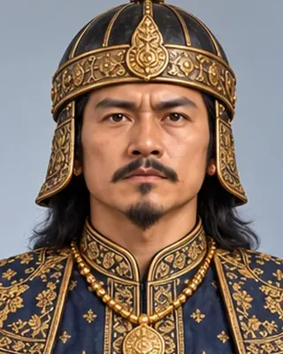

1539
সুক্লেনমুং
1539–1552 · Fifteenth Ahom king

Made Garhgaon the capital and drove the Koch army off the north bank in 1546. In his reign Hari, Sankardev's son-in-law, was executed, leading Sankardev to leave the kingdom.
Some chronicles suspected him in his father's murder.
Record confidence: high.